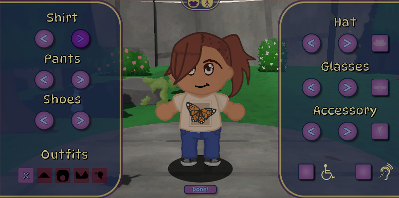
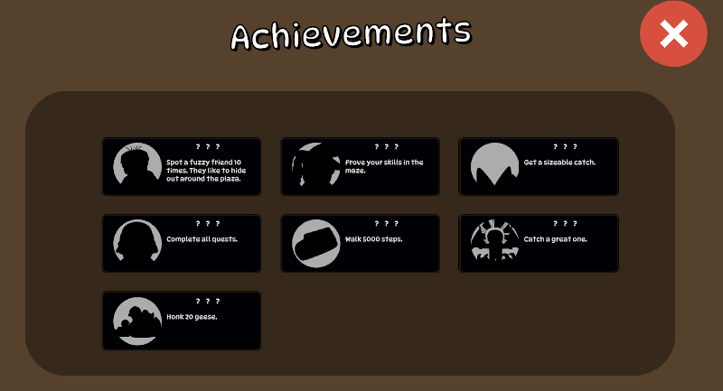

IdaGem
A gamified 4th-grade history curriculum
Roles
Project Lead • Programmer • Designer
Technical Stack
Overview
IdaGem is an educational game designed for 4th-grade students,
blending Idaho history lessons with interactive gameplay to create
an engaging and effective learning experience. Developed in
collaboration with Idaho teachers, IdaGem aligns with the state’s
required curriculum and transforms traditional lessons into an
immersive digital environment. Targeting young students aged 9-11,
the game centers around a virtual version of the Idaho Anne Frank
Memorial, a hub area where students can explore, learn, and interact
with NPCs representing various professions, such as historians,
explorers, and police officers.
The purpose of IdaGem is to make learning history more engaging and
meaningful by integrating game mechanics like avatar customization,
in-game currency, and leaderboards. Students complete lessons,
quizzes, and creative activities to reinforce their knowledge, all
while earning rewards to personalize their experience. Two
minigames—a fishing challenge and a randomized maze—add competitive
and skill-based elements to keep students motivated and invested.
IdaGem also inspires creativity through a Minecraft-style exhibit
builder, encouraging students to demonstrate understanding in a fun
and visual way. With quizzes, achievements, and exploration
incentives, IdaGem turns learning into an adventure, fostering
curiosity and retention of historical knowledge.
Showcase
Creating Accounts & Classrooms
IdaGem allows both teachers and students to create their own
accounts. The teacher accounts can create and manage their
classrooms, as well as choose to either approve or deny student
submissions. The student accounts can complete lessons and play
various minigames.
In the classroom management, teachers can view the lesson
progress of all of their students. This allows teachers to see
which students are excelling and which students may need
additional help. By being able to view submitted answers,
teachers can provide feedback and help students improve their
understanding of the material.
Login Page:
Creating a Classroom:
Managing Students:
Learning Experience
Idaho Anne Frank Human Rights Memorial:
In collaboration with the
Wassmuth Center for Human Rights, the HUB world of IdaGem is a virtual recreation of the Idaho
Anne Frank Human Rights Memorial. Students can explore the
memorial and learn about human rights and the history of Anne
Frank.
Idaho History:
In addition to what students can learn in the lessons
themselves, there are a large amount of NPCs that students can
interact with to learn more about Idaho history. These NPCs
include a variety of professions, such as historians, explorers,
and police officers. Students can learn about the history of
Idaho from these NPCs, and even be quizzed on the information
they learn.
Lessons & Quests:
Students can learn about Idaho history through a variety of
lessons and activities. These lessons cover a wide range of
topics, from the Lewis and Clark expedition to the history of
Idaho's Native American tribes.
Exhibit Builder:
When a lesson has been completed, students can create their own
exhibits to demonstrate their understanding of the material.
Students can place various objects and NPCs in their exhibit to
create a visual representation of what they have learned. If the
build is approved by the teacher, it will be displayed in the
Wassmuth Center for other students to see. This is with the
intention of encouraging students to think creatively and show
off what they have learned in a fun and engaging way.
Learning about Human Rights:
Learning about Idaho History:

Lessons:

Exhibit Builder:
Student Engagement
One of the main goals of IdaGem is to make learning history more
engaging and fun so that students are more likely to retain the
information they learn. To help with this, IdaGem has a variety
of features that help to keep students engaged and motivated to
learn.
Avatar Customization:
Students can customize their avatars with a variety of clothing
and accessories through the gems they earn from completing
lessons and minigames. This allows students to personalize their
experience and show off their achievements.
Minigames:
There are two minigames in IdaGem that students can play to earn
extra gems:
The first minigame is a fishing minigame where students can
catch fish to earn gems. Most of the fish that can be caught are
based on what can actually be found in the Boise River, which
the Idaho Anne Frank Human Rights Memorial is located next to.
There are some extra rare fish that can be caught as well, which
are more wacky and occasionally mythological, such as a sea
serpent. These rare fish are harder to catch, but they are worth
more gems.
The second minigame is a maze minigame where students can earn
gems by completing a randomized maze. The maze is procedurally
generated, so it is different each time it is played. Students
have to get to the end of the maze before time runs out in order
to complete it. There are also NPCs randomly spread throughout
the maze that students can interact with to answer various
questions about Idaho history. If students answer the questions
correctly, they will be rewarded with both extra gems and time.
Their final score is based on how many answers they get correct
and how quickly they complete the maze.
Both of these minigames have their own leaderboards, so students
can compete with each other to see who can get the highest
score.
Achievements:
Students can earn achievements by completing various tasks in
the game. These achievements are displayed in the pause menu,
and students can earn gems by completing them. These
achievements range From walking a certain distance, to finding a
hidden sasquatch multiple times, to getting high scores. This is
with the intention of keeping students engaged and motivated to
explore the game.
Avatar Customization:
Fishing Minigame:
Maze Minigame:

Achievements:
Sound
In order to make the game more immersive and engaging for the students, IdaGem has a variety of sound effects and music that play throughout the game. These sounds range from the sound of the fish splashing in the fishing minigame to the sound of the bikers riding past along the Green Belt trail. We have multiple music tracks that play throughout the game in order to set the mood and tone of the experience.
Challenges & Takeaways
Developing IdaGem presented unique challenges, from balancing
educational content with engaging gameplay to leading a
multi-disciplinary team. Each obstacle was an opportunity to refine
my problem-solving, leadership, and technical skills.
This project was an incredibly rewarding experience, pushing me to
merge creativity with structure while ensuring accessibility and
real-world usability. The lessons I learned—particularly in
technical problem-solving, team leadership, and user-focused
design—continue to shape my approach to game development.